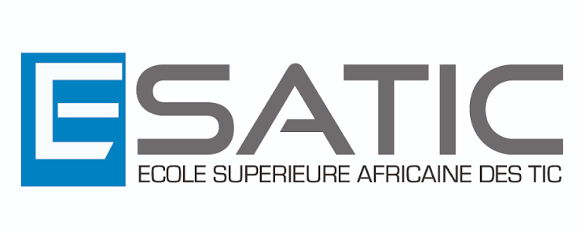
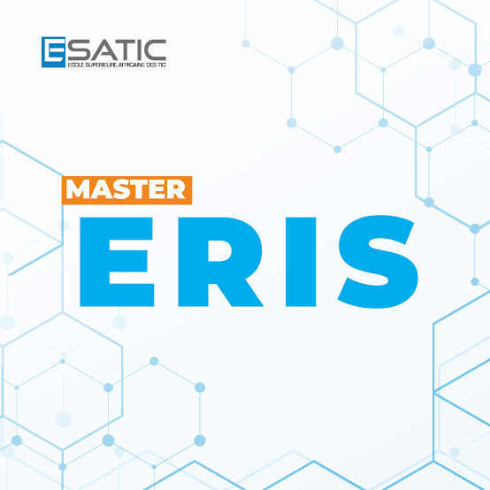

Structurer
HTML organise les paragraphes, les images et les sections de la page.
ÉTUDIANT À L’ESATIC
Touré Ibrahim, étudiant en Master 1 ERIS.
Une présentation, un projet web et un premier pas vers une meilleure maîtrise de Git et GitHub.

École SupérieureHTML / CSS / JavaScript / Git / GitHub
01 — PRÉSENTATION
Je m’appelle Touré Ibrahim et je suis étudiant en Master 1 ERIS à l’ESATIC.
Ce site est ma page de présentation, réalisée dans le cadre d’un travail demandé par notre professeur. Il me permet de mettre en pratique les bases du développement web avec trois technologies : HTML pour le contenu, CSS pour la mise en forme et JavaScript pour l’interactivité.
Le projet est aussi un support d’apprentissage de Git et GitHub. L’objectif est de comprendre comment suivre les modifications d’un projet, enregistrer son évolution et partager son code dans un dépôt en ligne.
Voir comment le projet prend forme
02 — MA FORMATION
ESATIC · École Supérieure Africaine des TIC
Ma formation est le cadre dans lequel je développe mes connaissances et réalise mes projets académiques. Cette page relie ma présentation personnelle à un exercice concret de création et de gestion de code.
03 — LE PROJET ACADÉMIQUE
Créer une page, suivre ses modifications avec Git, puis publier son code sur GitHub : chaque étape a un rôle précis.
HTML organise les paragraphes, les images et les sections de la page.
CSS adapte le site aux écrans et construit son identité visuelle.
JavaScript anime le parcours pédagogique et permet de copier les commandes.
GitL’historique du projet, sur l’ordinateur.
GitHubLe dépôt distant, pour partager le code.
Depuis le dossier du projet, initialisez Git. La branche principale porte le nom main.
git init -b mainLA SUITE S’ÉCRIT COMMIT APRÈS COMMIT